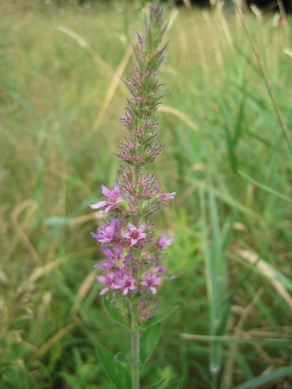
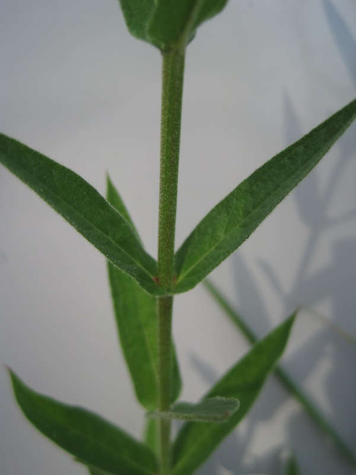
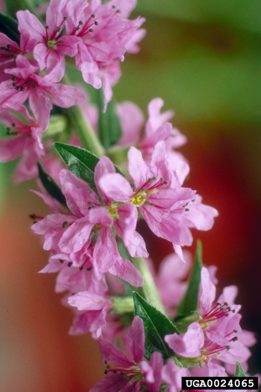

photo: Cleveland Metroparks
Purple Loosestrife (Lythrum salicaria)
Cleveland Metroparks |
Cleveland Metroparks |
 Cleveland Metroparks |
Norman E. Rees, USDA Agricultural Research Service - Retired, Bugwood.org |
{kind=link}
{kind=link}
{kind=link}
Form:
Herbaceous perennial, 3-7' tall, with 4-, 5-, or 6-sided, somewhat woody stems. Mature plants have multiple stems (30-50) originating from a woody crown.
Leaves:
Opposite, or occasionally alternate, pairs alternating at 90 degree angles, 1-4" long, sometimes appearing in groups of 3, lance-shaped, downy, with entire margins, and sessile.
Flowers:
Magenta-colored with 5 or 6 petals, clustered in spikes. Bloom all summer.
Fruits & Seeds:
Very small and born in capsules that burst at maturity (mid- to late summer). Produce up to 2 million seeds per plant each year. Seeds remain viable in the soil for up to twenty years.
Roots:
Large, woody taproot, with extensive rhizomes forming mats below the soil surface.
Similar Species:
Winged Loosestrife (Lythrum alatum) native
Tier 2 - Assess as Needed
The size and extent of these species populations are currently being inventoried with limited geographic information available. This survey will assist with identifying future control targets as populations are defined.
Action: The inventory of these plants is ongoing. The approximate number of plants should be recorded keeping in mind population sizes may be highly variable.